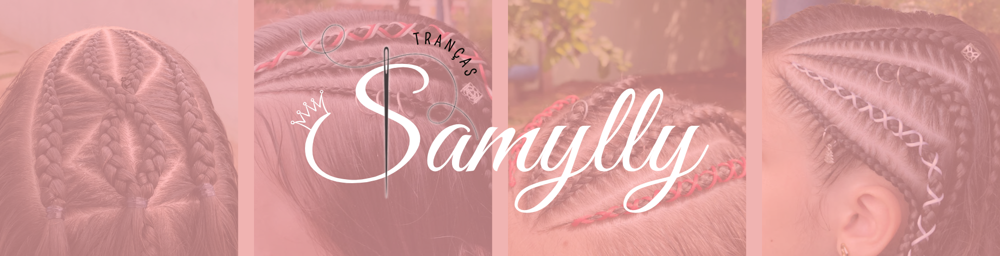

CUIDADOS:
Pré atendimento:
- Não passar creme de pentear.
- Sem finalização.
- Desembaraçado e limpo.
Pós atendimento:
No banho:
- Usar shampoo somente na raiz, massageando suavemente o couro cabeludo.
- Passar condicionador somente nas pontas do cabelo, isso ajuda a evitar o aspecto oleoso.
- Ao secar, não esfregue a toalha no cabelo, apenas aperte- a nos fios com delicadeza.
- Lavar no máximo 3 vezes na semana.
No dia a dia:
- Evitar ficar passando as mãos nas tranças.
- Usar touca ou fronha de cetim para dormir.
- Quando for retirar as tranças, cortar os elastiquinhos antes, para que evite a quebra dos fios.
Observações:
- A durabilidade varia de acordo com a curvatura do cabelo, mas com os cuidados citados acima, sua trança irá ficar bonita por mais tempo.
- Não se assuste quando for retirar as tranças. Todos os dias caem fios do nosso cabelo, mas como a trança irá prender esses fios, quando você for retirar as tranças eles irão cair todos de uma vez, dando a impressão que a trança fez você perder cabelo, sendo, na verdade, apensas os fios do caimento natural.